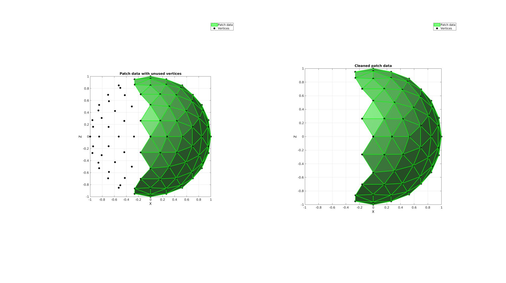
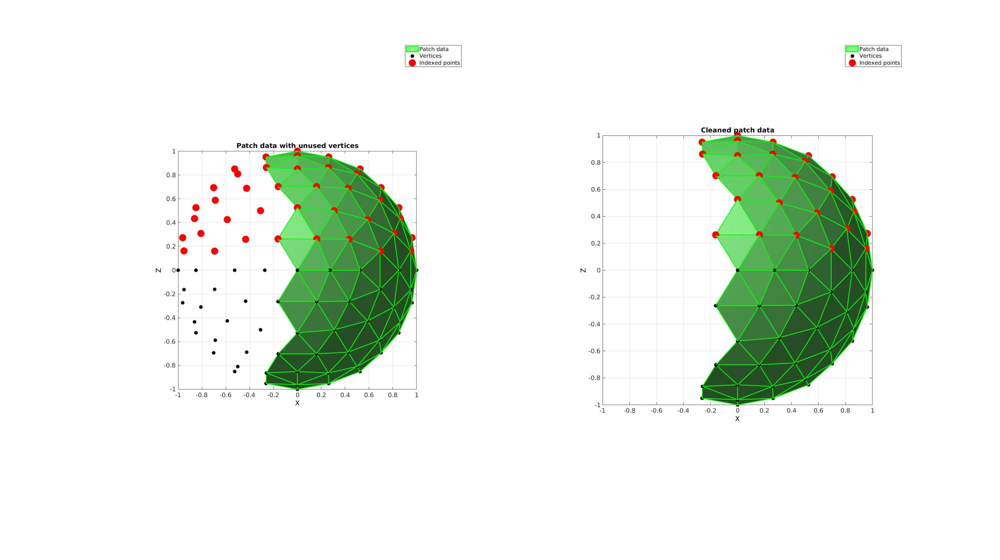
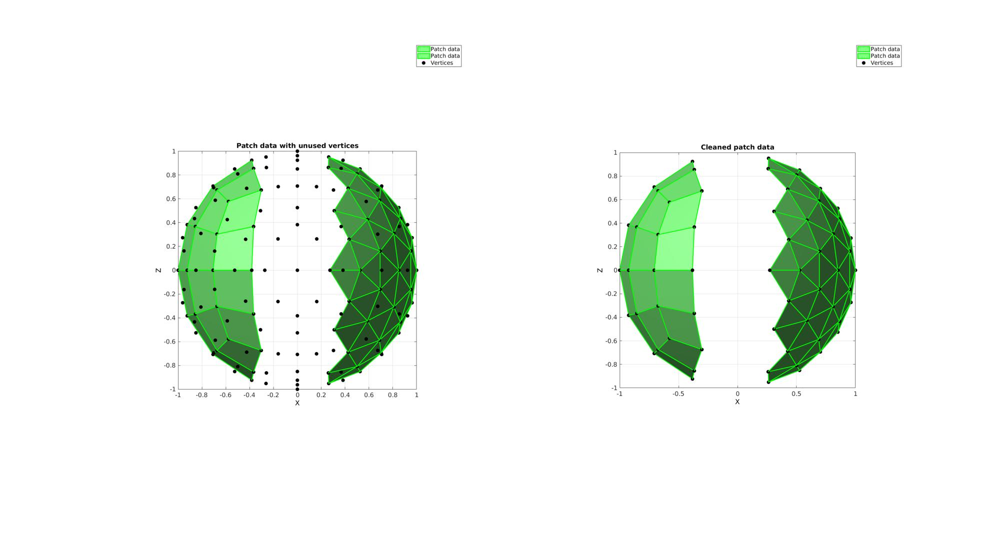

patchCleanUnused
Below is a demonstration of the features of the patchCleanUnused function
Contents
Syntax
[Fc,Vc,indFix2,logicValid,indUni]=patchCleanUnused(F,V);
Description
Removes unused vertices from patch data
Examples
clear; close all; clc;
Plot settings
fontSize=15; plotColor1=0.25.*ones(1,3); plotColor2=0.75.*ones(1,3); edgeWidth=2; markerSize=30;
Example 1: Removing unused nodes from patch data
Creating example patch data with unused nodes. This example is a sphere triangulation. The sphere is roughly cut in half by deleting half of its triangles. However, after the cut operation the nodes which used to be used by the deleted half are still present in the vertex array.
Defining geodesic dome triangulation
r=1; %sphere radius n=2; %Refinements [F,V]=geoSphere(n,r); %The sphere triangulation
Cropping away a selection of faces
logicKeepVertices=V(:,1)>0; %Logic on vertices logicKeepFaces=any(logicKeepVertices(F),2); %Logic on faces F=F(logicKeepFaces,:); %The cropped face list
Removing unused nodes using patchCleanUnused
[Fc,Vc]=patchCleanUnused(F,V);
Visualize results
cFigure; subplot(1,2,1); hold on; title('Patch data with unused vertices'); hp(1)=gpatch(F,V,'gw','g',1,edgeWidth); hp(2)=plotV(V,'k.','MarkerSize',markerSize); legend(hp,{'Patch data','Vertices'}); axisGeom(gca,fontSize); camlight headlight; view(0,0); ha=axis; subplot(1,2,2); hold on; title('Cleaned patch data'); hp(1)=gpatch(Fc,Vc,'gw','g',1,edgeWidth); hp(2)=plotV(Vc,'k.','MarkerSize',markerSize); legend(hp,{'Patch data','Vertices'}); axisGeom(gca,fontSize); camlight headlight; view(0,0); axis(ha); drawnow;
Example 2: Fixing indices associated with the patch data after unused vertex removal
Gather additional output to fix indices referring to the old mesh. The output indFix provides a mapping of the old indices to the new indices. Zeros are returned for points which are no longer a member of the mesh.
ind=find(V(:,3)>0); [Fc,Vc,indFix]=patchCleanUnused(F,V); %Clean-up /remove unused vertices ind_c=indFix(ind); %Fix the index set ind to be valid for the cleaned mesh ind_c=ind_c(ind_c>0); %remove zeros cFigure; subplot(1,2,1); hold on; title('Patch data with unused vertices'); hp(1)=gpatch(F,V,'gw','g',1,edgeWidth); hp(2)=plotV(V,'k.','MarkerSize',markerSize); hp(3)=plotV(V(ind,:),'r.','MarkerSize',markerSize*2); legend(hp,{'Patch data','Vertices','Indexed points'}); axisGeom(gca,fontSize); camlight headlight; view(0,0); ha=axis; subplot(1,2,2); hold on; title('Cleaned patch data'); hp(1)=gpatch(Fc,Vc,'gw','g',1,edgeWidth); hp(2)=plotV(Vc,'k.','MarkerSize',markerSize); hp(3)=plotV(Vc(ind_c,:),'r.','MarkerSize',markerSize*2); legend(hp,{'Patch data','Vertices','Indexed points'}); axisGeom(gca,fontSize); camlight headlight; view(0,0); axis(ha); drawnow;
Example 3: Removing unused points from a mixed mesh
Creating a
% Defining geodesic dome triangulation r=1; %sphere radius n=2; %Refinements [F1,V1]=geoSphere(n,r); %The sphere triangulation % Cropping away a selection of faces logicKeepVertices=V1(:,1)>0.2; %Logic on vertices logicKeepFaces=all(logicKeepVertices(F1),2); %Logic on faces F1=F1(logicKeepFaces,:); %The cropped face list % Defining quadrangles on a sphere r=1; %sphere radius n=2; %Refinements [F2,V2]=quadSphere(n,r); %The sphere triangulation % Cropping away a selection of faces logicKeepVertices=V2(:,1)<-0.2; %Logic on vertices logicKeepFaces=all(logicKeepVertices(F2),2); %Logic on faces F2=F2(logicKeepFaces,:); %The cropped face list F={F1,F2+size(V1,1)}; V=[V1;V2];
Removing unused nodes using patchCleanUnused
[Fc,Vc]=patchCleanUnused(F,V);
hp=gobjects(1,3); cFigure; subplot(1,2,1); hold on; title('Patch data with unused vertices'); hp(1:2)=gpatch(F,V,'gw','g',1,edgeWidth); hp(3)=plotV(V,'k.','MarkerSize',markerSize); legend(hp,{'Patch data','Patch data','Vertices'}); axisGeom(gca,fontSize); camlight headlight; view(0,0); ha=axis; subplot(1,2,2); hold on; title('Cleaned patch data'); hp(1:2)=gpatch(Fc,Vc,'gw','g',1,edgeWidth); hp(3)=plotV(Vc,'k.','MarkerSize',markerSize); legend(hp,{'Patch data','Patch data','Vertices'}); axisGeom(gca,fontSize); camlight headlight; view(0,0); axis(ha); drawnow;

GIBBON www.gibboncode.org
Kevin Mattheus Moerman, gibbon.toolbox@gmail.com
GIBBON footer text
License: https://github.com/gibbonCode/GIBBON/blob/master/LICENSE
GIBBON: The Geometry and Image-based Bioengineering add-On. A toolbox for image segmentation, image-based modeling, meshing, and finite element analysis.
Copyright (C) 2019 Kevin Mattheus Moerman
This program is free software: you can redistribute it and/or modify it under the terms of the GNU General Public License as published by the Free Software Foundation, either version 3 of the License, or (at your option) any later version.
This program is distributed in the hope that it will be useful, but WITHOUT ANY WARRANTY; without even the implied warranty of MERCHANTABILITY or FITNESS FOR A PARTICULAR PURPOSE. See the GNU General Public License for more details.
You should have received a copy of the GNU General Public License along with this program. If not, see http://www.gnu.org/licenses/.